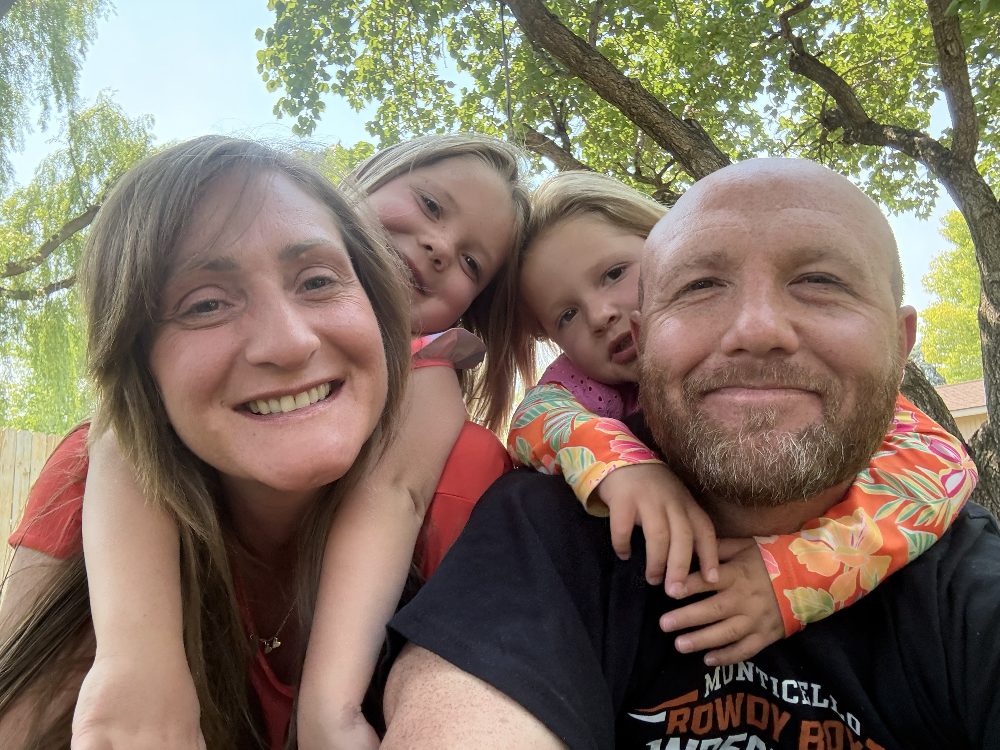
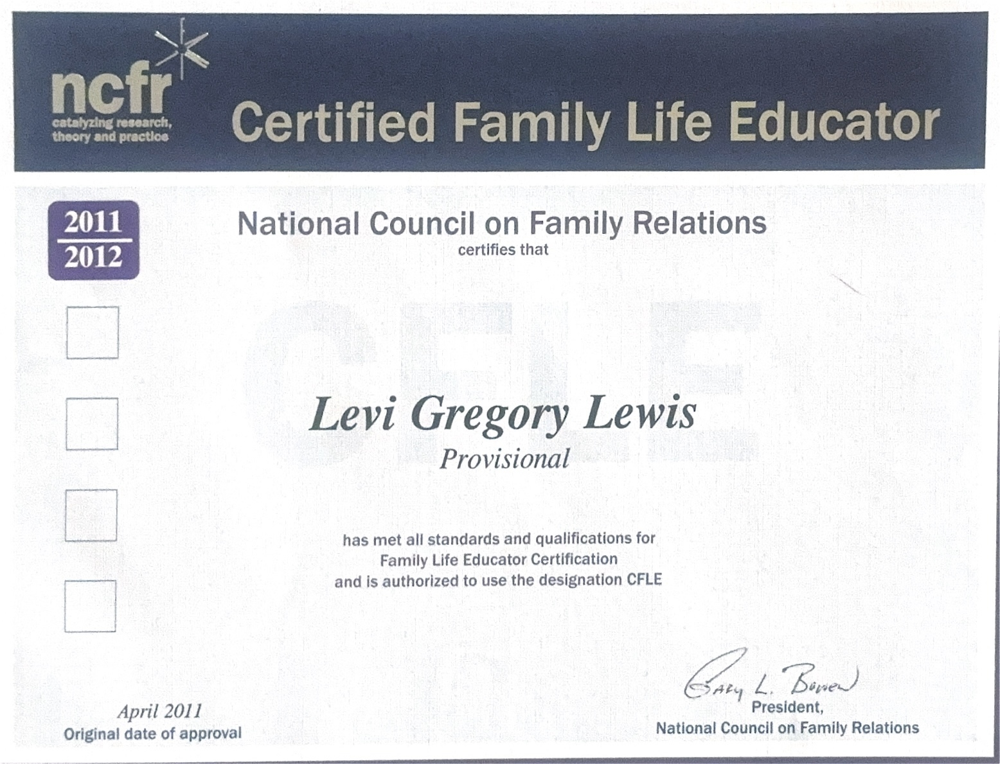

My name is Levi Lewis. I grew up in the wonderful town of Orem, Utah. In 2019, I married my eternal sweetheart, and not long after, we made our home in Monticello, Utah.
For thirteen years, I worked for the same company. Then, in February of 2026, I was laid off.
I applied everywhere. Resume after resume: local jobs, remote jobs, government jobs, anything that could keep us afloat. But on LinkedIn, I’d see postings with over a thousand applicants. It started to feel like I was shouting into a canyon. I came to believe my position had been a casualty of AI. And if AI was reshaping the world, then maybe it was time I learned to ride the wave instead of getting knocked down by it.
Somewhere in the middle of all that uncertainty, a quieter conviction settled in: I needed to start my own company.
At first, I thought it would be something practical: handyman work, property maintenance, something with my hands. They were good ideas. They just weren’t the idea. None of them would sit still in my heart.
Meanwhile, at home, my wife and I had a bedtime routine with our three- and five-year-old daughters. It was the same routine I’d had with my own mom growing up: brush teeth, read a book, and then a little gospel message based on what I’d studied that morning. I cherished those moments. But if I’m honest, the gospel portion wasn’t landing the way I hoped. The girls would squirm. Their eyes would drift. I could feel myself losing them.
I’m a member of The Church of Jesus Christ of Latter-day Saints, and there are so many beautiful resources for teaching children: products, videos, songs. I’ve been amazed by what other families and creators have made. But nothing was quite what I was reaching for at bedtime. I wanted something short and visual, something the girls would beg for, and something that would help me share my testimony in a way they could actually feel.
That’s when the two prayers collided: the search for a business, and the search for a way to reach my daughters. And the answer was the same answer.
Little Scripture Travelers Bedtime Stories was born.
What started as a few stories for my own little girls has grown into something far bigger than I imagined. My hope now is to reach Latter-day Saint families and every Christian family who wants to anchor their children in Christ.
Because here’s what I believe: when it comes to Jesus, we have so much more in common than people realize. Our Church is named after Jesus Christ for a reason. He is at the center of everything we do: our Lord, our Savior, our Redeemer, the only way back to our Father in Heaven. Whether you’re Latter-day Saint, Lutheran, Presbyterian, Anglican, Baptist, Methodist, Anabaptist, Pentecostal, Adventist, or somewhere in between: if Christ is at the center, we are family. The stories of the Old and New Testaments belong to all of us, and our children deserve to grow up knowing them.
Our Mission
Little Scripture Travelers exists to help families turn bedtime into a sacred routine. Through short, characterful scripture stories and a guided rhythm (Story, Feel, Remember, Prompt, Testify, and Lullaby), we help parents teach the gospel naturally and help children build the spiritual roots that carry them through life.
I’ve been testing these stories on my own little girls for months now, refining them little by little. Some nights, honestly, aren’t perfect. The girls wiggle. They don’t always listen. But then there are nights, those holy nights, when both of them lean in. When my wife and I share our testimony of how the story has lived in our own lives. When the Spirit settles into the room, and we can see in our daughters’ eyes that they feel it too.
And we get to lean over and whisper, “That warm feeling? That’s the Holy Ghost.”
Those are the nights I’m building this for.
That’s the deeper hope of this whole project: that bedtime by bedtime, story by story, your child learns the feeling of the Holy Ghost so well that years from now, when life gets hard and the world gets loud, they’ll know that quiet voice the moment it whispers. That’s the kind of spiritual foundation that holds.
President Russell M. Nelson said it best: “The joy we feel has little to do with the circumstances of our lives and everything to do with the focus of our lives.” That’s what we’re trying to give your children: a focus that will outlast every storm.
“In coming days, it will not be possible to survive spiritually without the guiding, directing, comforting, and constant influence of the Holy Ghost. My beloved brothers and sisters, I plead with you to increase your spiritual capacity to receive revelation.”
— President Russell M. Nelson
That is the second thing these stories are built to do. Night after night, as parent and child sit together in a quiet room and read, the Spirit has room to enter. Children who grow up feeling that presence learn to recognize His voice, and that recognition is what will carry them through the days President Nelson is talking about.
Oh, and both of my girls beg for the Lullaby every single night now. They absolutely love it.
Meet the Travelers
What sets Little Scripture Travelers apart is the four characters your children will fall in love with. Each one has a personality, a nickname, and a catchphrase:
- Beau, “Bo the Brave”: Big heart, brave start!
- Scout, “Scout the Seeker”: Look and see, what could it be?
- Willow, “Willow the Warm”: Warm hugs, warm hearts!
- Wren, “Wren the Wonderer”: Pause and ponder, what a wonder!
You won’t see them play big roles inside the books themselves. I’ve kept the stories short and focused so your whole routine fits inside ten minutes (or just five, if you only do the Story, Feel, and Remember). But you’ll see them in every illustration, and your children will meet them and fall for them in our short YouTube videos.
Because what makes children fall in love with a story? The characters. Once your little ones love Beau, Scout, Willow, and Wren, they’ll spot those familiar faces on every page, and bedtime becomes the moment they look forward to all day.
Inside the YouTube Videos
Every Little Scripture Travelers story begins the same beautiful way, in a cozy playroom library.
I’ll let you in on a little secret: that playroom is modeled after the one I grew up in. And the four little rocking chairs that Beau, Scout, Willow, and Wren each have? Those are the same kind of rocking chairs my sisters and I had when we were little. Curled up in the corner are our family’s dog and bunny. They live in the playroom always, the cuddly little mascots of the whole Little Scripture Travelers world.
At the center of the room sits the Travel Chest, a glowing wooden chest that holds the scriptures, the Most Treasured True Stories. The four Travelers gather around it. The chest slowly creaks open. The pages of the scriptures begin to turn on their own, flipping, fluttering, until they come to rest on the exact chapter of the adventure the children are about to witness.
Then, like magic, the story rises from the pages in a glowing projection of light, filling the whole room with wonder.
Together, the four Travelers joyfully proclaim:
“Brave hearts, bright sparks, kind hands, wise eyes: to the world’s most treasured true stories we fly!”
Each phrase belongs to one of the Travelers, a body part paired with the virtue that defines them: brave hearts for Beau, bright sparks for Scout, kind hands for Willow, and wise eyes for Wren.
And just like that, they’re transported straight into the scripture story itself. They walk alongside the prophets, sit at the Savior’s feet, and feel the wind, the dust, the wonder of it all. They experience the story firsthand, talking to each other, reacting in real time, living the scripture the way every child wishes they could.
When the adventure is over, they say in unison:
“Home we go, home we go, with a story in our hearts to know.”
And just like that, they’re back in the cozy playroom, but now they’re in their pajamas, just like your little one snuggled up beside you. The dog and bunny are right there waiting. Then our narrator steps in with the Remember This, Sweet Boys & Girls moment of the night, followed by the gentle Parent Prompt, a question for you to ask your child as you tuck them in.
By the time the video ends, your child has heard the story, felt the story, and lived the story, and they’re ready for the book in your hands.
The Background Behind the Books

The Lewis family, Monticello, Utah
Little Scripture Travelers is more than a side project or a content experiment. It is built on a foundation I was trained in: the preventive side of behavioral health, focused entirely on how families shape a child’s resilience before problems take hold.
I earned a B.S. in Behavioral Health Sciences with an emphasis in Family Studies & Human Development, the study of how habits, environments, and relationships shape a child’s mental and emotional growth. That degree came from an NCFR-approved program, which qualified me for the Certified Family Life Educator credential from the National Council on Family Relations. I received my Provisional CFLE certification in 2011. Life took me in a different direction for thirteen years, and the certification lapsed, but the discipline never left, and I am currently working toward re-certification.
Every structural choice in these books (the short story, the picture beside the words, the moment of doing, the self-reference prompt, the parent question, the family testimony) is drawn from peer-reviewed research in child development and learning science. The research backs up what faithful parents have always known instinctively: warm, repeated, rooted bedtime rhythms build children who are stronger, more resilient, and more anchored in who they are.

Provisional CFLE, National Council on Family Relations, April 2011
Lapsed after a 13-year career break. Re-certification in progress.